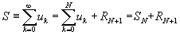
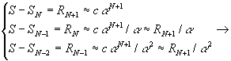
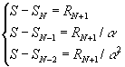
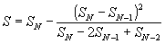

Estabeleça um conjunto de pontos na aba de Configurações.

Clique em Novo -> Interpolação -> Aproximação Polinomial -> Método de Aitken

É o mais simples dos métodos e resulta apenas em
acrescentar uma linha de código fora do ciclo de
cálculo da série. Representemos a série como a soma de
uma série truncada com um resto 
Se a convergência for geométrica então 
Resolvendo o sistema vem 
Se a convergência não for exactamente da forma
admitida, a expressão anterior fornece uma estimativa
melhorada para o valor da série S, que pode ser
determinada para diversos valores de N. Neste caso a
estimativa de S torna-se ela própria uma sucessão, de
convergência mais rápida (é o objectivo) que a série
original.
Para utilizar este método no MSN LAB siga as instruções abaixo.
Estabeleça um conjunto de pontos na aba de Configurações.
Clique em Novo -> Interpolação -> Aproximação Polinomial -> Método de Aitken